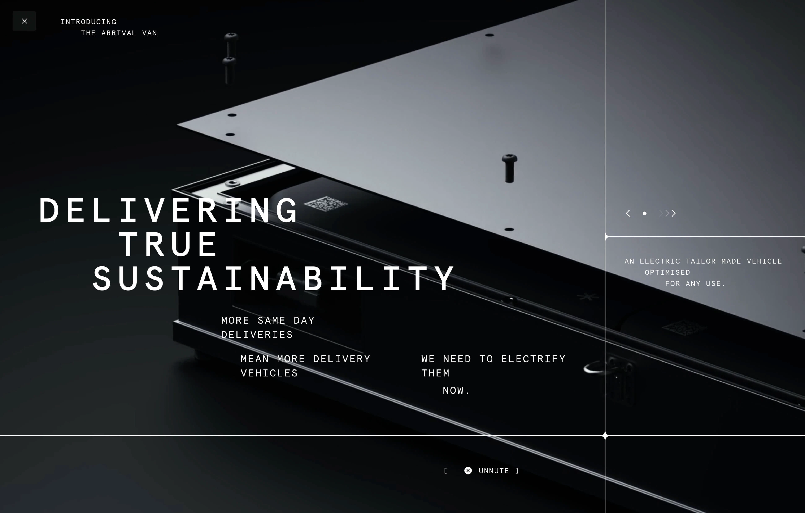
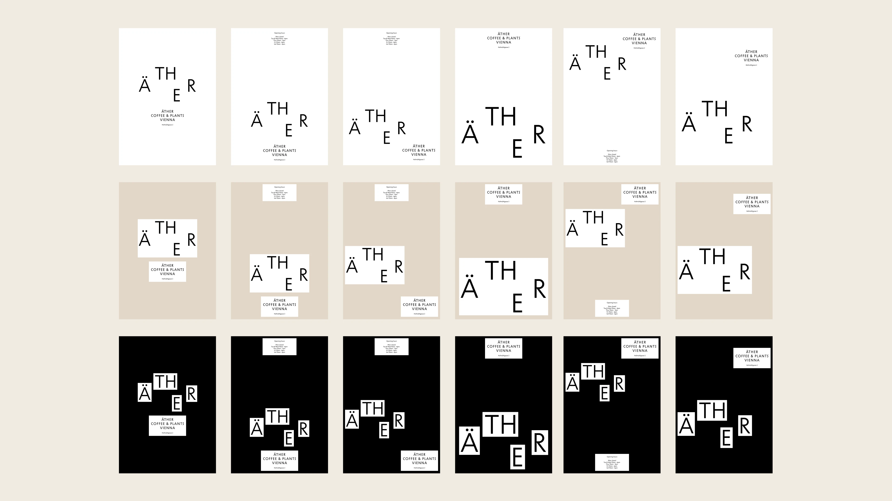
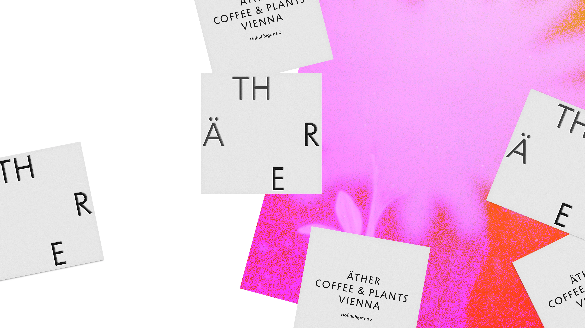
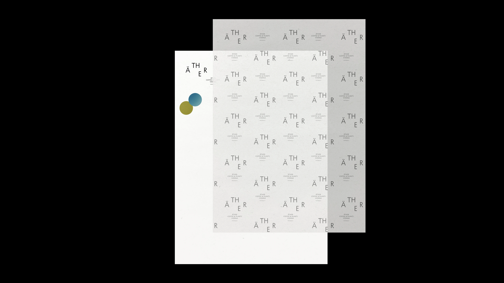
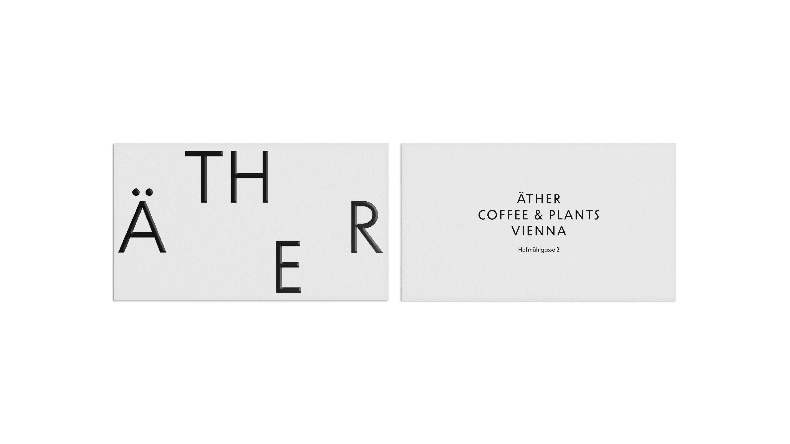
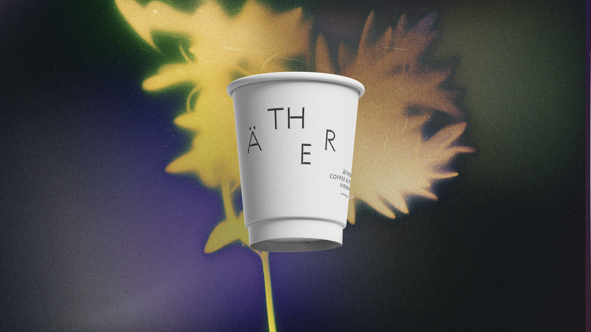

Стефан — фаундер бутиковой брендинговой студии (почти десять лет в команде). Линейный путь: художка → среднее специальное по графике → Школа графического дизайна. Любовь к знакам и брендингу прививил преподаватель Кен Кагаров через тему метафоры. Поговорили про то, почему студия отказывается от клиентов без ценностей, что такое co-creative, зачем каждый проект начинать в блокноте от руки и почему Figma Make — это «карандаш, только другой».
Ты говоришь — есть «культура дизайна», есть «дизайн-культура». Это одно и то же или разные вещи?
Часто встречается «дизайн-культура»: дизайн как профессия и что-то вокруг неё как приписка. Я решил это понятие перевернуть, потому что мне скорее интересно сделать срез — что есть сейчас. Поэтому в первую очередь смотрю на культурную составляющую: какой-то фундамент и какие-то вещи, которые могут прилипать к дизайну дополнительно.
Тут можно зайти с двух сторон: с одной — как дизайн встраивается в общую культуру (мировую или локальную); с другой — что это для меня лично.
С моей личной позиции — это про информацию в хорошем смысле. Я давно занимаюсь и на всё смотрю из какой-то призмы дизайна. Условно: пришёл в кафе — оцениваешь кухню в городе, урбанистику, что удобно, что нет, что можно лучше. Это постоянное желание всё на свете улучшить, сделать удобнее. Дизайн — это для людей, мы пытаемся сделать жизнь лучше, либо бизнес какой-то лучше. Стремление пофиксить, поправить, изменить в лучшую сторону. Даже если про красоту — сделать визуально эстетичнее, привлекательнее — это тоже про улучшение.
И ещё это про желание из хаоса сделать порядок в глобальном смысле. На данный момент своего развития я отношусь к тем дизайнерам — дизайнерам-джедаям, — которые стараются делать какой-то порядок. Хотя я не занимаюсь инфографикой или урбанистикой, или чем-то систематическим. Но мне нравится, когда что-то криво-косо, потом оно как-то выпрямляется, улучшается. Какое-то системное мышление, глобальная эстетика, красота.
И мне нравится людям про это рассказывать — студентам и заказчикам, просто людям. Делиться, объяснять, почему это красиво, а это некрасиво. Как так?
Расскажи про путь.
У меня довольно линейный путь, может быть, скучный — это был осознанный выбор. Закончил художку, пошёл в среднее специальное, получил дизайнерское образование. В первом дипломе написано «дизайн по графике», но всё было про графику, рисунок, композицию. Пробовал гравюру, разные техники.
В какой-то момент в меня влюбили в себя разные жанры плакатов — разные школы плакатов. Европа, какие-нибудь дизайнеры. Я всё это узнавал.
Поступил в ШГД — Школу графического дизайна. Встретился с классными преподавателями и друзьями. Там мы окончательно сформировали свой vision и сдружились с ребятами, с которыми потом начнётся студия. Уже когда учились, всё это сформировали — что нам нравится и что нет. Нам всегда нравилось делать что-то не как все, выделиться, попробовать какие-то эксперименты. Какая-то связь музыки и дизайна или других искусств. Но при этом итогом мог быть просто листок 70 на 100 с какой-то графикой. Что на этом листе — могло быть необычное, не среднестатистическое, может быть, странное, может быть, спорное. Ты сам ставил себе задачи, решал. Потом показываешь это другим, тебе дают фидбэк — через выставку или через комментарий. И снова делаешь. Так в принципе до бесконечности.
В какой-то момент я познакомился — у нас был преподаватель Кен Кагаров. Он привил любовь к логотипам, к знакам — к классической форме брендинга. Когда ты должен что-то очень ёмкое поместить, закодировать в маленький объект, маленький элемент. Через это я познакомился с темой метафоры, и до сих пор она мне очень нравится. Мыслю метафорами и пытаюсь это придумывать, воплощать. Самый кайф для меня в графическом дизайне.
Поэтому всё плавно перетекает в брендинг — там ты понимаешь, зачем это нужно, как это продаётся, как влияет. Включаются другие механизмы. Но по большому счёту, если упростить, всегда есть метафора, образ. Ты его создаёшь и делаешь к нему красивую обёртку.
Я не самоучка — у меня три образования. При этом я не фанат учёбы. Есть люди, которые любят дополнительное образование — это не я. Я всегда совмещал учёбу и работу. И это всегда был чисто графический, коммуникационный дизайн.


В ваших проектах — от Ректора до самых последних — всё очень выразительно, очень точно. За этим, кажется, скрывается не только желание нарушать правила, но и знание этих правил.
Ну да. Когда учишься, ты это не осознаёшь, не понимаешь, но потом оно где-то оседает, к этому возвращаешься. У нас при этом нет какой-то академичности, задрота. Хотя можно и так — мы реально много часов тратим на достижение того, что мы ищем в графике, в каких-то решениях. Не всегда это чувствуется.
У нас всегда очень много эскизов. Очень много ручных эскизов. Любой наш проект — всегда от руки в блокноте, потом переходит в цифру. Соблюдается такой подход — можно сказать, консервативный или классический. Я и студентам этот подход прививаю. Даже если казалось бы проще сразу всё сделать на компе — нет. Важно, чтобы ты рукой что-то почеркал в блокноте.
Это влияет на финальный результат. По поводу Ректора — там совпали разные факторы, разные люди, мы как будто бы копили-копили какую-то свою энергию, какие-то эксперименты — и так сложилось, что в этом проекте была возможность это всё показать. Сделать вещь не ради денег, не только ради решения для клиента, а такую дизайнерскую вещь. Дизайн в чистом виде.
И клиенту спасибо большое: там было сто процентов, даже сто десять процентов доверия и веры в результат. Так сложилось. Поэтому он такой — особенный.

Какие у тебя личные практики и ритуалы?
Разделю ответ на две части. Тут нет сеансов медитации, особо скрытых знаний нет.
Когда начинаю проект — это всегда рисование на бумаге в блокноте. Идеи, записи мыслей, схематичные изображения, поиск форм. Извлечение вариантов мыслей, их зарисовка. Это может быть несколько часов или несколько дней.
Мне нравится делать это в разных локациях. Меняешь картинку, локацию — может быть, город, страну, кафе, парк. Разные зоны как будто влияют. И всё это в удовольствие. Если ты делаешь и получаешь удовольствие, это влияет на результат — он только лучше становится.
Если посмотреть на мои конкретные работы — они все какие-то очень простые. Мне нравится простота формы, чистота — может быть, это скандинавскость, которую я очень люблю. Чем проще форма, тем больше смыслов можно вложить. Когда придумываю логотип, всегда стараюсь, чтобы ничего лишнего там не было — никакой декоративности, только суть, максимум смыслов.
Я кайфую, когда показываю клиенту концепт — и он сам начинает рассказывать про него, какие смыслы видит, которые я даже не доложил, не прописал. Значит, результат достигнут. Человек, который видит это первый раз, сам про смысл говорит. Это круто.
При этом в студии у нас по-другому могут быть устроены механизмы. Тоже много ручного, много поиска формы, много эскизов — это первое. Второе — много обсуждений, много брейнстормингов.
У нас почти каждый проект — мы собираемся. Внутри есть специальный этап — брейнсторм всей команды и рабочей группы плюс люди, которые просто подключаются. Разгоняем. Записываем смыслы, мемы на тему, картинки, референсы. Прежде чем выдавать клиенту презентацию — важно много-много подумать и обсудить.
Сейчас всё чаще начинаем привлекать к этому клиента. Если у него есть дизайн-команда или даже не дизайнеры — мы с ними совместно штормим. У нас в студии есть философия co-creative — совместное творчество с клиентами. Мы это пытаемся активно развивать. Видим сплошные плюсы. Хотя времени тратится много. Это не про прямой заработок: проще что-то сделать, продать, сразу деньги получить. Co-creative — более философский подход, или стратегический. Мы видим в этом ценность глобальную. Сильнее чувствуем, что мы делаем — что не бессмысленно работаем.
И ещё — про доверие. Банальная штука. Достичь максимального доверия с обеих сторон: чтобы ты доверял и тебе доверяли. Тогда работа делается просто. Если этого нет — лотерея.



Что вы в команде считаете качеством? Как это артикулируете?
У нас по дефолту — качество. Все ребята опытные, не приемлют чего-то некачественного. Это есть у нас как у фаундеров точно, и в команде в принципе тоже. Клиент сюда приходит за качество — даже если так не формулирует. Много делаем брендов премиального или люкс-сегмента, не только это, но качество там тоже одна из ценностей.
С другой стороны — у нас большая насмотренность. Мы внутри это понятие формируем негласно. Нигде не прописано, из чего состоит. Но из-за того, что мы такие безумцы — очень любим профессию больше, чем деньги, — мы внутри готовы биться за красоту, качество, эстетику. Бесконечно обсуждать шрифты, типографику. Это перфекционизм или, скорее, неравнодушие.
И с этим неравнодушием мы с пеной у рта готовы всем транслировать. Не стесняемся говорить. Дальше нам пофиг, как на это отреагируют. С клиентами, у которых нет в ценностях желания делать качественный проект, мы стараемся просто не работать. Если совсем — это либо очень много денег нам должны за это, либо просто много. В принципе не стесняемся отказываться, если не сходимся по ценностям.
Мы позиционируем так: если у клиента ценность — дизайн, а дизайн равен качеству и эстетике, — это наш клиент. Если просто для отчёта какого-то слова сделать, что-то на стол кому-нибудь бросить — не наш. Мы можем себе позволить отказать. Мы небольшое агентство, скорее бутиковое. Поэтому: качество = ценность = дизайн. Наверное, так.
Если сильно вырастить студию, с каждым новым человеком в штате эта возможность чуть-чуть понижается: больше людей — больше соглашений, больше компромиссов. В Европе распространены студии из двух человек. У них компромиссов вообще нет — что хотят, то и делают.
Конфликт между крафтом и технологиями есть?
Конфликта не вижу. Это про разное.
Тема крафта, поиска выразительной формы через рисование — как было, так и есть. Желания от этого отказаться нет. Это часть нашего процесса проектирования.
Сейчас добавились новые инструменты. Мы их тоже используем, как все. Где-то они ускоряют работу, где-то помогают быстро поискать решение или визуализировать варианты. И это круто, потому что такое сильное ускорение помогает быстрее делиться идеями с другим человеком — заказчиком или коллегой. Раньше нужно было долго оформлять идею. Сейчас можешь это сделать за секунду, обсудить.
Но это только про скорость, про быструю визуализацию мыслей и скетчей. В нашей работе AI не заменяет финальный результат. Мы всё так же много времени тратим на продакшен — на моушен, на шрифт, когда его проектируем, на компонент-лэйауты. На качество. Как тратилось — так и тратится. Ускорение произошло на стадии поиска идей и обсуждения.
Что мне сейчас очень нравится — недавно появилась штука Figma Make. Это про быстрый прототип: можно идею тут же обернуть, вставить идентику бренда. Кайфуем от этого инструмента. Когда мы учились, был Processing — мы интересовались, но порог кода высокий. Были ребята, которые втянулись и сейчас преподают креативный кодинг. А я через пять минут засыпал — вообще не про код. С новой технологией вайб-кодинга, как Figma Make, теперь могу сам или с коллегами всё это делать. Кайфовая штука.
Но должен быть вижен — для того чтобы этими инструментами пользоваться. Есть подход, когда ты просто закинул промт, тебе что-то выдало, и ты потом сидишь обосновываешь, почему получился такой результат. Это не моё. Я скорее за то, чтобы идею проверять, ускорять, тестировать — и если работа летит, то круто.
В студии у нас почти десять лет с самого начала параллельно к клиентским проектам идёт лаборатория. Помимо клиентских задач много делаем внутри: эксперименты, обсуждения, не всё показываем. Кому-то нравится рисовать, кому-то нравится вайб-кодинг — кто-то сидит и просто этим занимается, потом делится с командой. Бесконечный процесс. Это наращивание мастерства — когда ты много часов занимаешься одним и тем же, скилл растёт через ремесло. Поэтому AI — это ещё один инструмент, как карандаш, только другой.
«Я отношусь к дизайнерам-джедаям, которые стараются из хаоса делать порядок».
— Стефан Лашко
«Любой наш проект — всегда от руки в блокноте, потом переходит в цифру. Даже если казалось бы проще на компе — нет. Важно, чтобы рукой ты что-то почеркал».
— Стефан Лашко
«Качество = ценность = дизайн. Если у клиента нет в ценностях желания делать качественный проект — мы стараемся просто не работать».
— Стефан Лашко
«Из-за того что мы такие безумцы — очень любим профессию больше, чем деньги, — мы внутри готовы биться за эту красоту».
— Стефан Лашко
«AI — это ещё один инструмент. Как карандаш, только другой».
— Стефан Лашко
Дополнительно
- —
О практике
Стефан Лашко — арт-директор, дизайнер, преподаватель, со-основатель студии ESH.